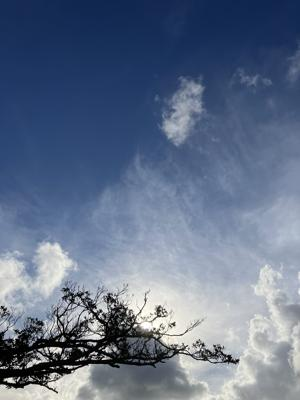

うるがいの話 ある日
最新: エアコンが故障【うるがいの話 ある日】とは 一日だけのプログです
『うるがいの話』の最新一日だけのプログで、通信料が少なく経済的だ。カニの画像をクリックすると全ての日付が載る『うるがいの話』サイトを表示します
|
|
【うるがいの話】 うるがい(ｳﾙｶﾞｲ urugai)とは、『もずくがに』の名前でとても大きくなります。 |
|---|---|
|
|
【カミマヤーの話】 猫のことを方言でマヤーといいます。カミマヤー（kamimayaa）とは、神の猫のことです。 |
|
【たながぁの音楽】 たながぁ（ﾀﾅｶﾞｰ tanagaa）とは手長えびのことで、何種類かあり大きいのは車 エビぐらいになります。 |

|
【ぶながぁの話】 ぶながぁ(ﾌﾞﾅｶﾞｰ bunagaa)とは、赤い髪の毛、赤い身体、そして身長は１ｍ２０ｃｍ ぐらい、川の蟹を食べているの目撃された。場所は沖縄県国頭郡大宜味村のと ある村僕の隣近所に住んでいる爺さんから、聞いた話です。 |
|
|
【ギーマの話】 ギーマ(giima)とは、山原の里山に咲くスズランに似た、 花を付けます。実は食べられます、 気が付くと口の周りが紫になっています。 |
2024年06月28日 (金）エアコンが故障
15:19

５月３１日にクリーニングしたばかりの日立のエアコンが、故障した。性能
が強力な、ダイキンのエアコンは一応大丈夫なので暑さはしのげるのだが。
午前１０時前から、修理の依頼の電話をする、しかし電話は話中でなかなか
繋がらなず、イライラ、そしてやっと繋がりメーカーからの連絡待ち、１１
時すぎに電話を着信しているのだが、タイミングが悪くとれなかった。昼過
ぎに電話する、あ！、なんとメンドくさい、ガイダンス応答ボタン！、３度
ほど繰り返す、やっと人の声、来週月曜日でいいですか？、いえ、翌日以降
にお願いします、と保証期間の過ぎているエアコン、在庫のみの対応となり
ますが、５千８百円準備でいててくださいと言われる。
修理できず、新しいのを買う羽目になるかも、修理を依頼する前に新規購入
を調べたら、１４万以上する。確か去年は、那覇市がエアコンの買い替え費
３万円を補助とあったが、那覇市に電話してみた。残念、今年はやらないと
ただし、県の省エネの補助がありますヨと、ええ、それって事前に調べまし
た対象となるエアコンの型番一覧はどれも、３０万以上の高額で・・・・。
念にために、エディオンに電話したが、私が買おうとしているエアコンは補
助がないようだ。
１５時１３分 ビットコインの総資産 ￥２８、７９１（↑５５０）